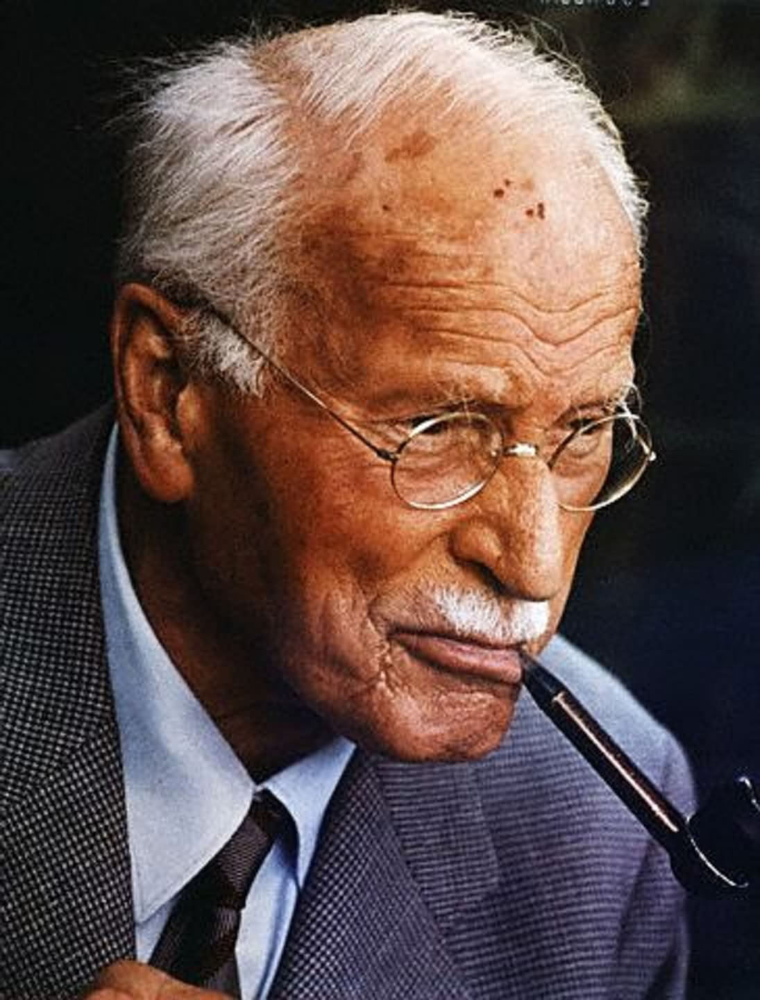

Carl Jung
Carl Jung is a Swiss pychologist who founded analytical psychology, which puts importance of the psyche and focuses on symbols, archetypyes, etc.
Some of his concepts are:
- Jung was interested in the depth of th psyche. Unconscious wasn’t repository of repressed experience/underdeveloped biologic systems. Instead it was the underlying structure of consciousness itself. Jung believed that human experience was structured by underlying patterns of behaviors that were specific to humankind, and realm of imagestic and symbolic representation that was impart a representation of those underlying behaviors.
- Jung believed that due to us manifesting a specific set of human behaviors over millions of years, we also evolved our cognitive apparatus that was capable of representing those patterns of behaviors.
- Personal Unconscious: This was what Jung called the Unconscious which was proposed by Sigmund Freud. The Personal Unconscious is made up of memories/cotents that have either been forgotten over time, or repressed.
You can buy his books here: Carl Jung